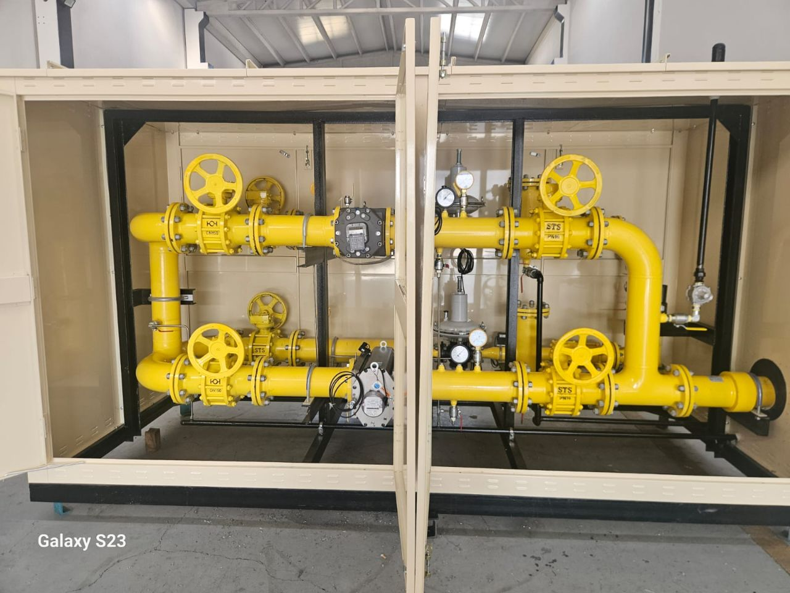
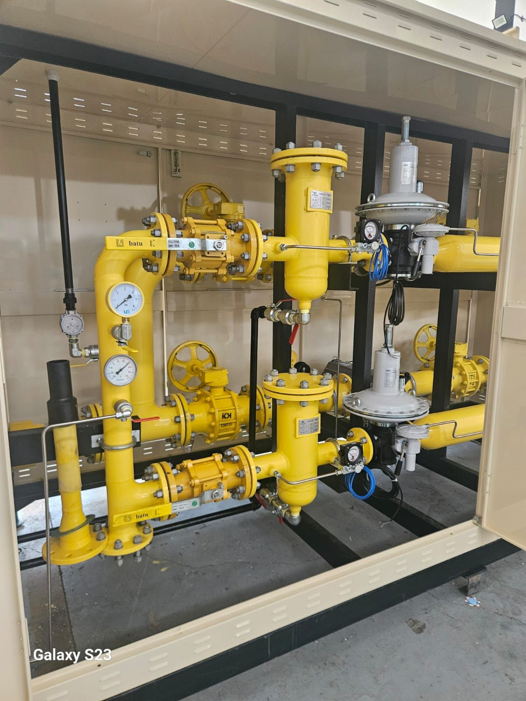
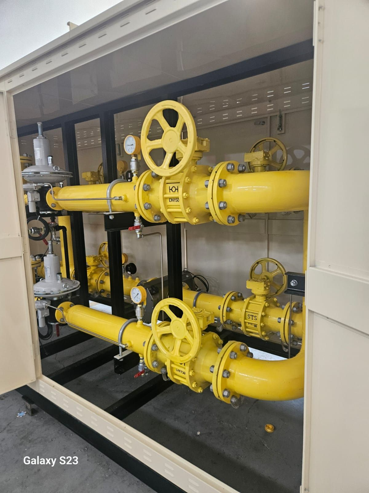

Nartgaz Güvencesiyle
Diyargaz’ın altyapı güçlendirme projeleri kapsamında, RMS-C 1600 m³/h kapasiteli müşteri istasyonu kurulumu ve teslimat süreçleri başarıyla tamamlandı.
Yüksek debili doğalgaz ihtiyacı bulunan sanayi ve ticari tesislere yönelik hayata geçirilen bu proje, bölgedeki enerji arz güvenliğini üst seviyeye çıkarmayı hedefliyor.
Teknik Detaylar
- Yüksek Kapasite: Saatlik 1600 m³ gaz akış kapasitesine sahip RMS-C (Regülasyon ve Ölçüm Sanayi İstasyonu) tipi istasyon, tesisin kesintisiz ve güvenli enerji kullanımını garanti altına alıyor.
- Teknik Altyapı: Uluslararası güvenlik ve basınç düşürme standartlarına uygun olarak tasarlanan sistem; hassas regülasyon, ölçüm ve filtreleme üniteleriyle donatıldı.
- Saha ve Test Süreçleri: Montajı tamamlanan istasyon, ilgili tüm sızdırmazlık, basınç ve güvenlik testlerinden başarıyla geçerek devreye almaya hazır hale getirildi.
Diyargaz, bölgesel sanayi üretimine değer katacak ve doğalgaz erişimini güçlendirecek altyapı yatırımlarına ara vermeden devam ediyor.
Detaylı bilgi için tıklayınız.


